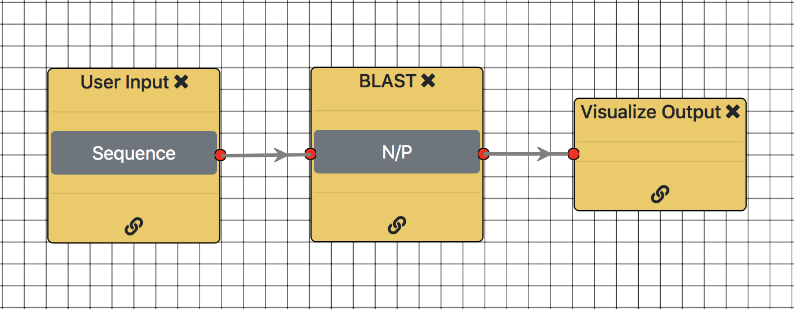

Introduction
Tutorial
DNA Structure
DNA stands for deoxyribonucleic acid and it contains the information that determines inherited characteristics. DNA is made up of repeating subunits called nucleotides. Nucleotides are made up of the following three basic units.
- A phosphate group
- A sugar named deoxyribose
- A nitrogen base
There are four nitrogen bases in DNA. They are
- Adenine (A)
- Thymine (T)
- Cytosine (C)
- Guanine (G)
Genetic Information
Genetic information is packed in to chromosomes inside the nucleus of the cells of higher organisms (Eukaryotes).
A chromosome consists of a single, very long DNA helix on which thousands of genes are encoded. Every human cell has 46 molecules of double-stranded DNA. These DNA molecules are coiled to form 23 pairs of chromosomes.

Genes are the working subunits of DNA that contain a particular set of instructions, usually coding for a particular protein or for a particular function. In humans, genes vary in size from 100 to more than 2 million base pairs.
What is Pairwise Sequence Alignment?
Sequence alignment is a method of arranging biological sequences to identify regions of similarity. The similarity being identified, may be a result of functional, structural, or evolutionary relationships between the sequences.
Pairwise sequence alignment is one form of a sequence alignment technique, where we compare only two sequences. This process involves finding the optimal alignment between the two sequences, scoring based on their similarity (how similar they are) or distance (how different they are), and then assessing the significance of this score.

The basis of sequence alignment lies with the scoring process, where the two sequences are given a score on how similar (or different) they are to each other. The pairwise sequence alignment algorithms require a scoring matrix to keep track of the scores assigned. The scoring matrix assigns a positive score for a match, and a penalty for a mismatch.
Three basic aspects are considered when assigning scores. They are,
- Match value — Value assigned for matching characters
- Mismatch value — Value assigned for mismatching characters
- Gap penalty — Value assigned for spaces
Let us consider a simple example to understand sequence alignment. We are provided with two sequences ACTCG and ATTC. We can align them as shown below.

The first character of the two sequences is a match, as both are letter A. The second character of the first sequence is C and that of the second sequence is T. So, it is a mismatch. A space is introduced at the end of the second sequence to match with G. This space is known as a gap.
Some well-known tools which utilize pairwise-sequence alignment algorithms to find matching sequences are,
- FASTA (FAST Alignment)
- BLAST (Basic Local Alignment Search Tool)
What is Multiple Sequence Alignment?
In multiple sequence alignment (MSA) we try to align three or more related sequences so as to achieve maximal matching between them. The goal of MSA is to arrange a set of sequences in such a way that as many characters from each sequence are matched according to some scoring function.

The scoring process of MSA is based on the sum of the scores of all possible pairs of sequences in the multiple alignment according to a scoring scheme.
where score(A, B) = pair-wise alignment score of A, B
Example
Consider the following scoring scheme.
- A match gives you +1
- A mismatch gives you 0
- A gap costs −1
Let us see how we can calculate the alignment score for the 3 sequences ATGGCAG, ATGGC and GGCT. We can align the sequences as follows.
Sequence 1: A T G G C A G
Sequence 2: A T G G C _ _
Sequence 3: _ _ G G C T _
score(Seq 1, Seq 2) = 1 + 1 + 1 + 1 + 1 + (-1) + (-1) = 3
score(Seq 1, Seq 3) = (-1) + (-1) + 1 + 1 + 1 + 0 + (-1) = 0
score(Seq 2, Seq 3) = (-1) + (-1) + 1 + 1 + 1 + (-1) = 0
Score of multiple alignment = ∑ score(A, B) = score(Seq 1, Seq 2) + score(Seq 1, Seq 3) + score(Seq 2, Seq 3) = 3 + 0 + 0 = 3
The goal of MSA is to achieve the maximum alignment score.
Three of the popular MSA tools used at present are,
- Clustal Omega
- T-Coffee
- DIALIGN
What is a Workflow?
A workflow consists of a set of activities which enables the systematic organization of resources that transform materials, provide services, or process information. It can be depicted as a sequence of operations to complete a process. It is similar to a pipeline where the output of one element is used as the input of the next element.
What are Bioinformatics Workflows?
Bioinformatics workflows are used to organize a sequence of activities related to biological data. They consist of a series of computational or data manipulation steps that are related to bioinformatics analyses.
Workflows are visualized in the form of workflow diagrams, depicting inputs, outputs, services and data flows.
Given below is a simple workflow where a user can input a sequence, perform BLAST search, get the matching sequences and visualize them. User input, BLAST and visualization are represented as tasks and the edges connecting these tasks represent the data flow.
Similarly, complex workflows can be created and the results can be visualized.